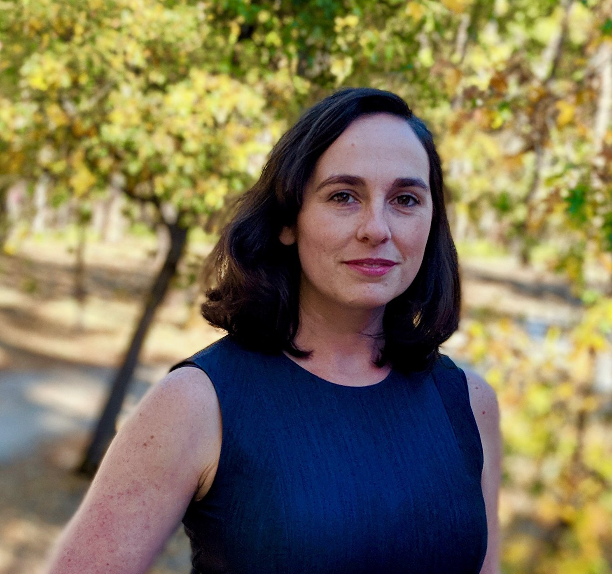

Alumni reflection · original submission
Sydney Geissler
ETH Zurich
2020 alumni reflection · 2 minute read
The contributor’s narrative responses from their completed, publication-authorized 2020 EverydayBME submission. Section headings identify the survey themes; they are not reconstructed questions. Roles and plans refer to 2020.

Background and career path
I have enjoyed mentoring students throughout my career. When I was a PhD student I had 5 undergraduate students at one time helping with my projects and planning their projects, and while working as a postdoc in Basel, I acted as a mentor to Master's and PhD students. I found that often the students taught me a lot and even when I was mentoring someone in a different area (though of course there was some overlap), connecting with the students and being willing to learn along side them was more important than just giving them a clear answer. I am happy to say that many of my students still check in with me regularly and most have continued their scientific careers.
The international experience
An international education is important to give you a broader understanding of the scientific community and of your own life. In my career, I learned about different expectations and methods, I found working in an international university that I could gain valuable understanding of a culture while also expanding my skill set. It is important to gain the different perspectives to make a choice about where you want your career to go, and to gain an appreciation for science being done outside of the world you know.
Work and career reflections
I would say to younger people in science that it is ok to not know where you want to go in the future or what you want to be doing. I have met many people who got their PhDs because they "knew" they wanted to be a professor and then were disappointed when they did not succeed in academia. I have also known many people who chose to go into a completely different field after they finished their PhDs and who had no plan on going in. I often say I got a PhD because I am lazy, I didn't want to choose what I was going to do yet, I didn't want to go to work yet. I love learning and studying, so that was the right choice for me.